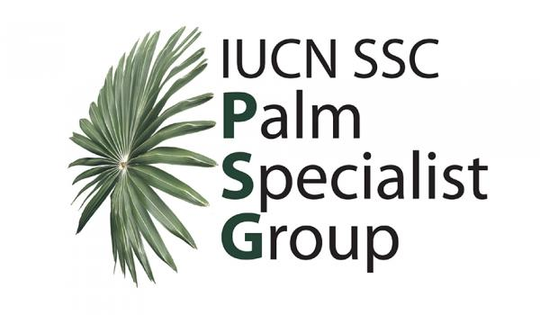

The IUCN SSC Palm Specialist Group brings together researchers, conservationists and Red List assessors working to document the conservation status of the world's palm species (family Arecaceae). We coordinate assessments, support regional specialists, and provide science-based recommendations for palm conservation worldwide.
We welcome palm researchers and conservationists interested in contributing to assessments or joining the group's regional networks.
| Species | Genus | Category | Year | Status |
|---|